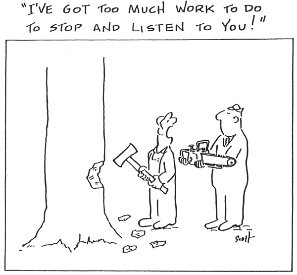
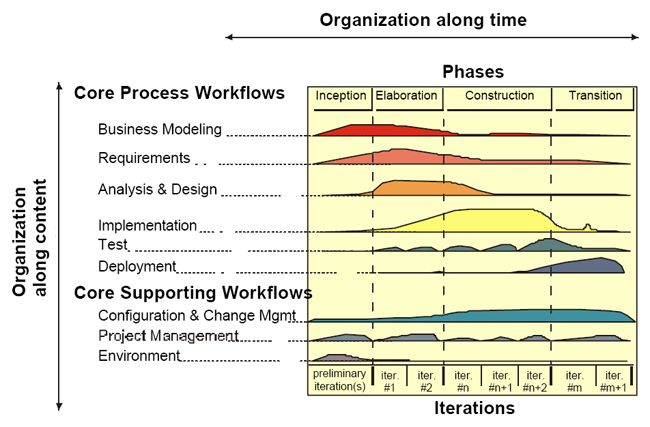

System Categories
Air traffic control system
Innovate or Die
From ... to transfers, transactions, content, telemetry to control
Software Architecture in Practice, Second Edition
Vasa Museum, Stockholm, Sweden
All effective QA approaches are based on the reality that mistakes will be
made throughout the project. Project success depends on positioning the project
team to detect and correct these mistakes quickly and easily.
QA Fundamentals
People always underestimate the time required to develop software (Standish Group CHAOS report,1995)
Causes of software failure (KPMG report – top 3 from list)
Steve McConnel - SW Project Survival Guide

“If you can’t find the time to do it right, where are you going to find the
time to do it over?”
There is no magic bullet, even with good software development practices, things
can go bad.
Winner of the "Not My Job" award 2007.
COTS
The disadvantages of the pure waterfall model arise from the difficulty of fully specifying requirements at the beginning of the project, before any design work has been done and before any code has been written.
The salmon lifecycle model. It’s not impossible to back up with the waterfall model, just hard.
The main drawback of the waterfall model is the difficulty of accommodating change after the process is underway. One phase has to be complete before moving onto the next phase.
Inflexible partitioning of the project into distinct stages makes it difficult to respond to changing customer requirements.
Therefore, this model is only appropriate when the requirements are well-understood and changes will be fairly limited during the design process.
Few business systems have stable requirements.
The waterfall model is mostly used for large systems
engineering projects where a system is developed at several sites with
a stable product definition and when you’re working with well-understood
technical methodologies.
Evolutionary prototyping model. With evolutionary prototyping, you start by designing and implementing the most prominent parts of the program in a prototype and then adding to and refining the prototype until you’re done. The prototype becomes the software that you eventually release.
Reuse-oriented development
Incremental development advantages
Spiral model sectors
The code-and-fix model is a model that is seldom useful, but that makes it nonetheless common.
If you haven’t explicitly chosen another lifecycle model, then you’re probably using code-and-fix by default.
If you haven’t done much project planning, then you’re undoubtedly using code-and-fix.
You might have a formal specification, or you might not.
You then use whatever combination of informal design, code, debug, and test methodologies suits you until you have a product that’s ready to release.
For tiny projects that you intend to throw away shortly after they’re built, this model can be useful—for small proof-of-concept programs, for short-lived demos, or throwaway prototypes.
For any other kind of project, this model is dangerous. It might have no overhead, but it also provides no means of assessing progress; you just code until you’re done.
In the end, this lifecycle model has no place on a rapid-development project, except for the small supporting roles indicated.
The code-and-fix model. Code and fix is an informal model that’s in common use because it’s simple, not because it works well.

An example of a design workflow (see requirements workflows in the Use Cases module)
Agile methods are a family of development processes, not a single approach to software development.
Some of the principles behind the Agile Manifesto are:
In the RUP there are three disciplines that encompass modeling activities for a single project – Business Modeling, Requirements, and Analysis & Design. The AUP on the other hand, being a subset of the RUP, combines the three modeling disciplines into a single Model discipline.
The lifecycle for the Enterprise Unified Process (EUP)All efforts, including modeling, is organized into disciplines in the UP and is performed in an iterative and incremental manner. The AUP is a subset of the RUP and the EUP a superset of the it. To some extent the UP is serial in the large and iterative in the small. The six phases of the EUP clearly occur in a serial manner over time, at the beginning of an UP project your focus is on project initiation activities during the Inception phase, once your initial scope is understood your major focus becomes requirements analysis and architecture evolution during the Elaboration phase, then your focus shifts to building your system during the Construction phase, then you deliver your software during the Transition phase, you operate and support your software in the Production phase, and finally you remove it from production during the Retirement phase. However, on a day-to-day basis you are working in an iterative manner, perhaps doing some modeling, some implementation, some testing, and some management activities. In the RUP there are three disciplines that encompass modeling activities for a single project – Business Modeling, Requirements, and Analysis & Design – and the EUP adds Enterprise Business Modeling and Enterprise Architecture. All six disciplines are described in the table below. For a description of potential artifacts to create during these disciplines visit Agile Models Distilled.
The Modeling Disciplines of the Unified Process
Extreme Programming (XP)
The Rules and Practices of Extreme Programming
RUP Phases vs. XP |
| RUP Phase | XP Notion |
|---|---|
| Inception: |
|
| Elaboration |
|
| Construction |
|
| Transition |
|
Now that we understand the basics of how modeling in the UP works, we can examine how well AM fits in with it. Luckily many of AM’s principles and practices are arguably a part of the UP already, although perhaps not as explicitly as I would like. The table below presents an examination of how well each individual AM practice is currently implemented in the UP, if at all, and discusses how to adopt the practice within the scope of the UP. My experience is that it is relatively straightforward for UP teams to adopt AM practices if they choose to do so. This is because the UP is very flexible, one of its underlying principles is that you should tailor it to meet your unique needs, making it easy to merge AM practices into the UP.
|
Practice |
Fit |
|
AM has a wide definition for project stakeholders, including users, management, operations staff, and support staff to name a few that are compatible with the UP. The UP clearly includes project stakeholders, such as users and customers, throughout most of it disciplines. To be successful UP project teams should allow project stakeholders to take on modeling roles such as Business Process Designer and Requirements Specifier as appropriate, there is nothing in the RUP preventing this by the way. The more active project stakeholders are the less of a need there will be for reviews, management presentations, and other overhead activities that reduce your team’s development velocity. |
|
|
The application of modeling standards, in particular the diagrams of the Unified Modeling Language (UML), is a significant part of the UP. Furthermore the RUP product includes guidelines for the creation of many modeling artifacts, guidelines that your teams should consider adopting and following as appropriate, and explicitly suggests that you tailor the guidelines that they provide for your exact needs. To remain agile, however, UP teams should recognize that you often need to bend the guidelines and standards – in other words, don’t let them become a straight jacket. There are detailed UML modeling guidelines posted at this site. |
|
|
UP teams are free to apply modeling patterns, the RUP product describes many common modeling patterns, as part of their efforts for any of the modeling disciplines. This practice enhances the UP with its advice to ease into the application of a pattern, the UP does not make this concept as explicit as it could. |
|
|
One of the strengths of the UP is that provides some advice for when to create each type of model, and recent incarnations of the RUP product includes significant advice for non-UML artifacts such as data models and user interface storyboards (UI flow diagrams). |
|
|
AM’s concept of collective ownership can be used to enhance the efforts on UP projects, assuming that the team culture supports the concept of open and honest communication. The UP supports collective ownership with its strong focus on configuration management issues, it has a discipline dedicated to this task, although its change management processes may potentially get in your way if developers and project stakeholders are unable to distinguish when to formalize change control and when not to. To be fair, this is a problem regardless of when you apply AM on an UP project, or on any type of project for that matter. UP teams should turn the configuration management dial up a few notches and allow anyone on the project to access and work on any artifact that they wish, including models and documents. |
|
|
The UP clearly includes this concept, one only has to look at the activity diagrams depicting each discipline to see that several artifacts are potentially being worked on in parallel. However, this concept could be communicated better because the near-serial flow in its activity diagrams presented for each major modeling activity doesn’t communicate this concept well. There is a larger issue as well when you consider the lifecycle as a whole. Because the UP has organized its modeling efforts into separate disciplines, for very good reasons, it isn’t as apparent that not only could you work on several business modeling artifacts in parallel but you could also work on requirements-oriented artifacts, analysis-oriented artifacts, architecture artifacts, and design artifacts too. UP teams can turn the dial up a few notches by reading between the lines of the discipline activity diagrams and the UP lifecycle diagram and choosing to perform activities from several disciplines simultaneously when it makes sense to do so. |
|
|
This practice is a choice made by the modeler(s), albeit one that must be implicitly supported by the rest of the development team. UP teams will need to adopt modeling guidelines that allow models that are just good enough and the customers of those models (including programmers, project stakeholders, and reviewers) must also be willing to accept simple models. This is a cultural issue, one that is often difficult for many organizations to adopt. |
|
|
See Create Simple Content. |
|
|
Modelers on UP teams are free to discard anything that they wish. As with the simplicity practices your organization’s culture must accept the concept of traveling light, of developing and maintaining just enough models and documents and no more. |
|
|
UP teams are free to follow this practice. UP teams can turn the communication dial up a notch by following the principle of Open and Honest Communication by making all artifacts available to everyone as well as to publicly display the critical models used by the project team. |
|
|
The UP includes the concept of integrating with external systems, these systems are typically identified on use case models and the RUP suggests introducing “boundary classes” to implement the interface to these systems. At the time of this writing the RUP appears weak with respect to activities such as legacy system analysis and enterprise application integration (EAI). The explicit adoption of this practice clearly strengthens the UP’s integration activities and fits in well with it’s concepts of use case realizations – the interaction between systems could be specified with one or more use cases and then the corresponding use case realization would be the formalized contract model. |
|
|
This practice can be easily adopted by an UP team. As mentioned previously, the unfortunate depiction of UP modeling activities as quasi-serial processes and the division of modeling activities into separate disciplines can hinder the iterative mindset required of agile modelers. |
|
|
This practice is clearly an aspect of the UP – the UP’s support for iterations implies that you will be incrementally developing your model throughout your project. UP teams can easily turn the iterative and incremental dial up a few notches by preferring smaller, simpler models that quickly lead to implementation and testing. |
|
|
The UP implicitly includes this practice. Every modeling discipline clearly includes several roles, each role being filled by one or more people. UP teams can turn the communication dial up a few notches by adopting tools that support team modeling, such as whiteboards and collaborative modeling tools (see the Communication article) over single-user modeling tools. |
|
|
The UP explicitly includes this practice. At the end of every iteration, except perhaps for the ones during the Inception phase, the UP specifically states that you should have a working prototype. Furthermore, the UP insists that you have a working end-to-end prototype at the end of the Elaboration phase that proves your architecture. |
|
|
Reuse is an implicit part of the UP, and reuse management is an explicit part of the Enterprise Unified Process (EUP). UP teams can turn the reuse dial up a few notches by actively preferring to reuse existing resources instead of building them from scratch, including but not limited to existing models, existing components, open source software (OSS), and existing tools. |
|
| Single Source Information | There is no reason why you cannot store information in a single place when following the UP. Unfortunately, many organizations choose to instantiate the RUP in a documentation-driven manner (which IBM Rational clearly advices you not to do), and as a result they travel very heavy and clearly take a multi-source approach. |
|
In theory this can be an easy concept for UP teams to adopt as it dramatically reduces the effort expended to keep your artifacts up to date. However, in practice many organizations prove to have a problem with this concept, particularly if they have a strong “traceability” culture. Traceability is the ability to relate aspects of project artifacts to one another, the support for which is a strong feature of the UP as it is an important aspect of its Configuration and Change Management discipline. Furthermore, the RUP product includes tool mentors for working with Rational RequisitePro, a requirements traceability tool, making it appear easy to maintain a traceability matrix between artifacts. My experience is that organizations with traceability cultures will often choose to update artifacts regularly, even if it isn’t yet painful to have the artifacts out of date, and update the traceability matrix relating everything to one another. To turn their productivity dial up several notches UP teams should choose to travel light, to loosen up a bit and allow project artifacts to get out of sync with one another, and to maintain a traceability matrix between artifacts only when there is clear benefit to do so AND their project stakeholders understand the issues involved as well as authorize the effort. A traceability matrix is effectively a document and is therefore a business decision to be made by project stakeholders. |
|
|
The RUP product includes tool mentors that make it easier for teams to work with tools sold by Rational Corporation. However, the reality is that UP teams are welcome to use any development tool that they want and Rational tools compete on their merits just like the products of any other company. UP teams can turn their productivity dial up several notches by expanding their horizons to include simple tools such as whiteboards, index cards, and Post-It notes in addition to CASE tools. |
Something that is important to understand is that for AM to be successful the culture of your organization must be open to the concepts, values, and principles of agile software development. The problem is that the UP is often adopted by organizations that either implicitly or explicitly do not accept the values of agile software development. Their focus is often on following processes and using tools, the RUP product clearly defines many processes and describes how to apply Rational’s tools effectively on software projects, and therefore the RUP is clearly attractive to them. Unfortunately this goes against the agile value of preferring individuals and interactions over processes and tools. When the culture of an organization is documentation centric they may find the UP appealing because you can instantiate it in such a way as to result in the creation of significant amounts of documentation (you can also instantiate it to result in very little documentation, remember, the UP is flexible). If an organization is documentation centric then this aspect of its culture goes against agile software development’s value of preferring working software over comprehensive documentation. This organization may still successfully adopt, tailor, and instantiate the UP but be unable to follow many of AM’s principles and practices effectively because it does not have an agile culture (see the article When Does(n't) AM Make Sense). The point is that how well AM and UP will fit together in your organization depends largely on your organization’s culture and not so much on the UP itself. You can easily use the techniques of AM to improve your UP modeling efforts, but to be effective you will find that you need to overcome cultural challenges within your organization.
|
People-Related Mistakes |
Process-Related Mistakes |
Product-Related Mistakes |
Technology-Related Mistakes |
|
1. Undermined motivation 2. Weak personnel 3. Uncontrolled problem employees 4. Heroics 5. Adding people to a late project 6. Noisy, crowded offices 7. Friction between developers and customers 8. Unrealistic expectations 9. Lack of effective project sponsorship 10. Lack of stakeholder buy-in 11. Lack of user input 12. Politics placed over substance 13. Wishful thinking |
14. Overly optimistic schedules 16. Insufficient risk management 17. Contractor failure Insufficient planning 18. Abandonment of planning under pressure 19. Wasted time during the fuzzy front end 20. Shortchanged upstream activities 21. Inadequate design 22. Shortchanged quality assurance 23. Insufficient management controls 24. Premature or too frequent convergence 25. Omitting necessary tasks from estimates 26. Planning to catch up later 27. Code-like-hell programming |
28. Requirements gold-plating 29. Feature creep 30. Developer gold-plating 31. Push me, pull me negotiation 32. Research-oriented development |
33. Silver-bullet syndrome 34. Overestimated savings from new tools or methods 35. Switching tools in the middle of a project 36. Lack of automated source-code control |
Scrum is an iterative, incremental process for developing any product or managing any work. It produces a potentially shippable set of functionality at the end of every iteration. It's attributes are:
Scrum is an agile process to manage and control development work.
Scrum is a wrapper for existing engineering practices.
Scrum is a team-based approach to iteratively, incrementally develop systems and products when requirements are rapidly changing
Scrum is a process that controls the chaos of conflicting interests and needs.
Scrum is a way to improve communications and maximize co-operation.
Scrum is a way to detect and cause the removal of anything that gets in the way of developing and delivering products.
Scrum is a way to maximize productivity.
Scrum is scalable from single projects to entire organizations. Scrum has controlled and organized development and implementation for multiple interrelated products and projects with over a thousand developers and implementers.
Scrum is a way for everyone to feel good about their job, their contributions, and that they have done the very best they possibly could.


Scrum has been employed successfully as a management wrapper for Extreme Programming engineering practices. Scrum provides the agile management mechanisms; Extreme Programming provides the integrated engineering practices.
Benefits of xP@Scrum include:
Bruce Tuckman's 1965 team-development model
The progression is:
Features of each phase:
Forming - Stage 1
The classic Situational Leadership model of management and leadership style also illustrates the ideal development of a team from
The aim of the leader or manager is therefore to develop the team through the four stages, and then to move on to another role.